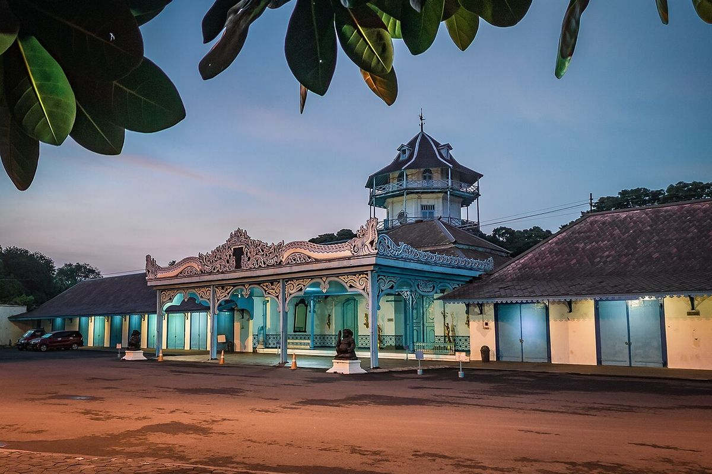

Wisata Atau Budaya

Mau Lihat Rumah Betang di Pangkalan Bun? Begini Caranya
6 Agustus 2026KOMPAS.com – Ingin melihat langsung rumah tradisional suku Dayak saat liburan ke Pangkalan Bun, Kalimantan Tengah?
Baca Selengkapnya
Promosi Wisata Banyuwangi Digenjot, Penambahan Penerbangan Dikaji
BANYUWANGI, KOMPAS.com - Promosi destinasi wisata Banyuwangi bakal diperkuat dalam beberapa waktu ke depan. Tak hanya pemasaran destinasi dan event, peluang menambah konektivitas penerbangan menuju ujung timur Pulau Jawa itu juga mulai dikaji untuk mendukung peningkatan kunjungan wisatawan.
12 agustus 2026 Baca Selengkapnya
Pulau Penyengat Dipoles Jadi Destinasi Wisata Budaya Melayu
JAKARTA, KOMPAS.com - Kementerian Pekerjaan Umum (PU) melakukan penataan kawasan Pulau Penyengat di Kota Tanjungpinang, Provinsi Kepulauan Riau, untuk memperkuat fungsi pulau tersebut sebagai destinasi wisata budaya Melayu sekaligus meningkatkan kualitas lingkungan. Pulau Penyengat dikenal sebagai salah satu pusat sejarah dan kebudayaan Melayu, dengan berbagai warisan bersejarah seperti Masjid Sultan Riau yang menjadi ikon wisata religi dan budaya di wilayah tersebut.
12 agustus 2026 Baca Selengkapnya
Kemenbud Sebut Tak Ikut Campur Suksesi Keraton Surakarta, Fokus ke Revitalisasi
JAKARTA, KOMPAS.com - Kementerian Kebudayaan (Kemenbud) menyampaikan, tidak mencampuri urusan suksesi Keraton Surakarta, Jawa Tengah, sehubungan dengan revitalisasi cagar budaya di tempat itu.
24 juli 2026 Baca Selengkapnya